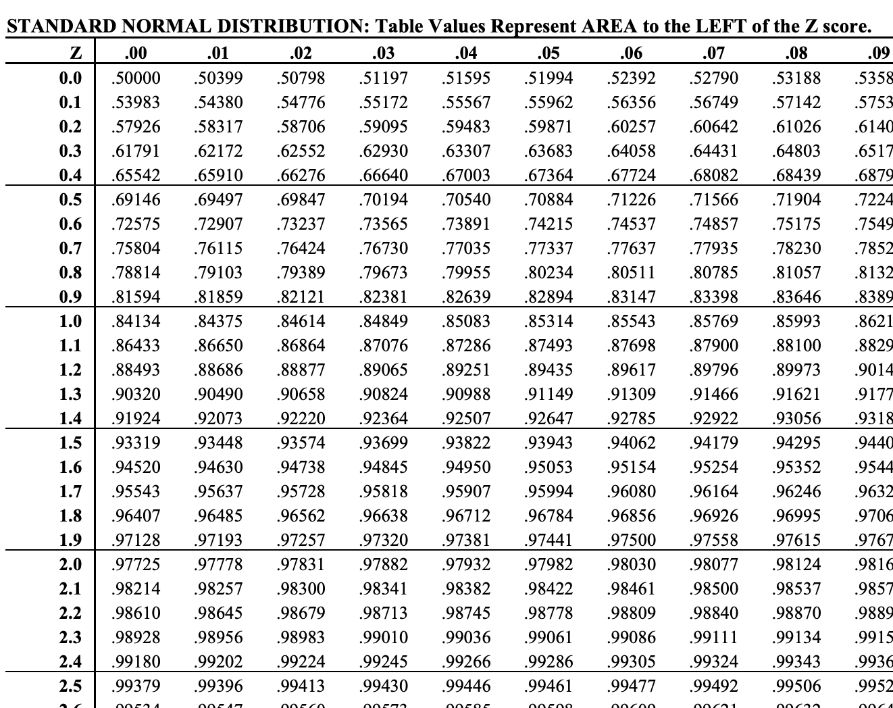
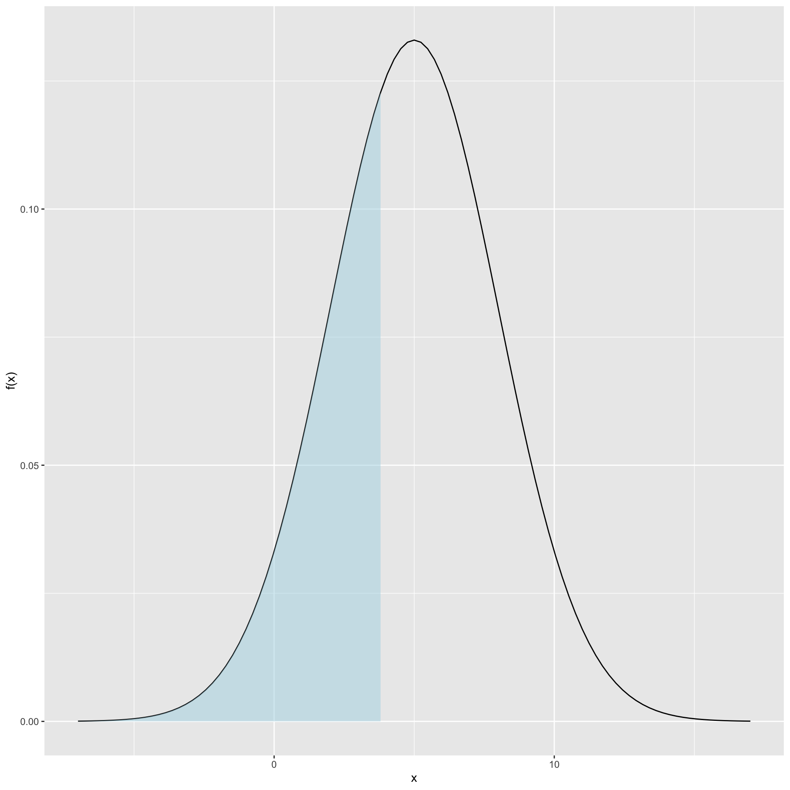
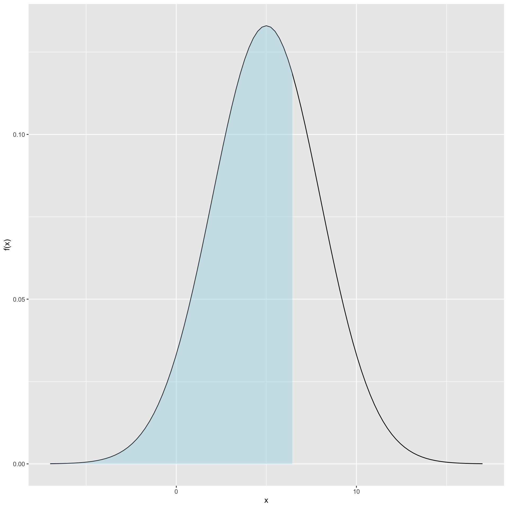
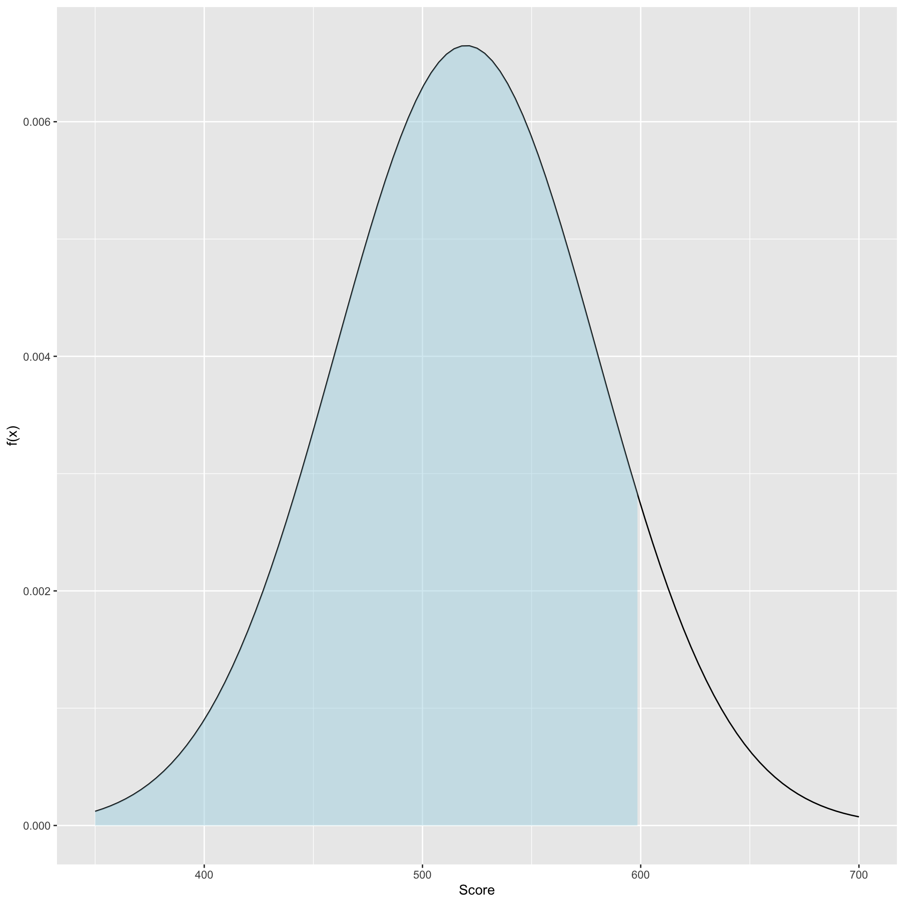
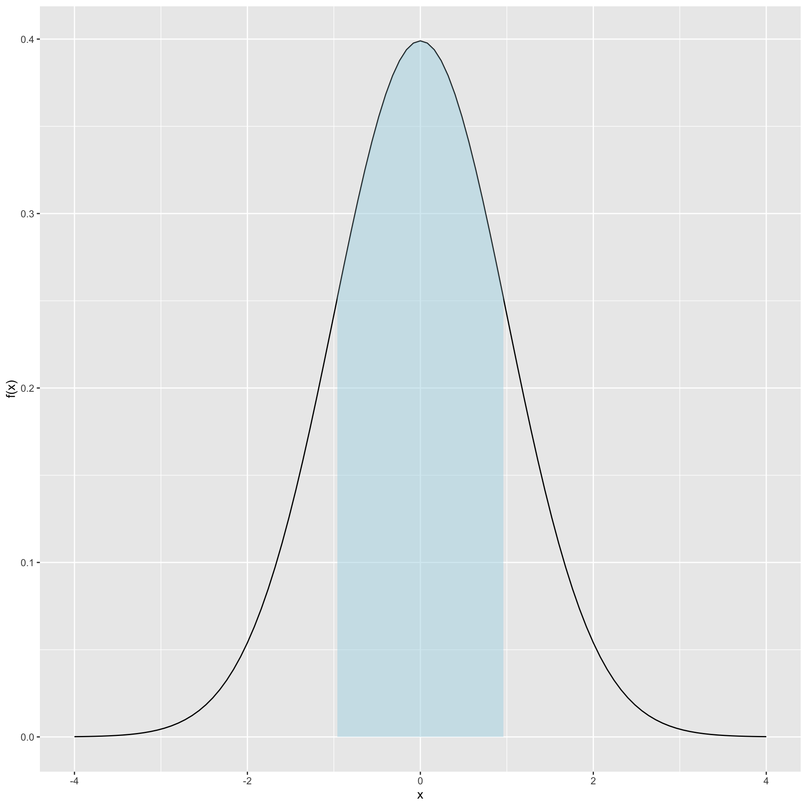
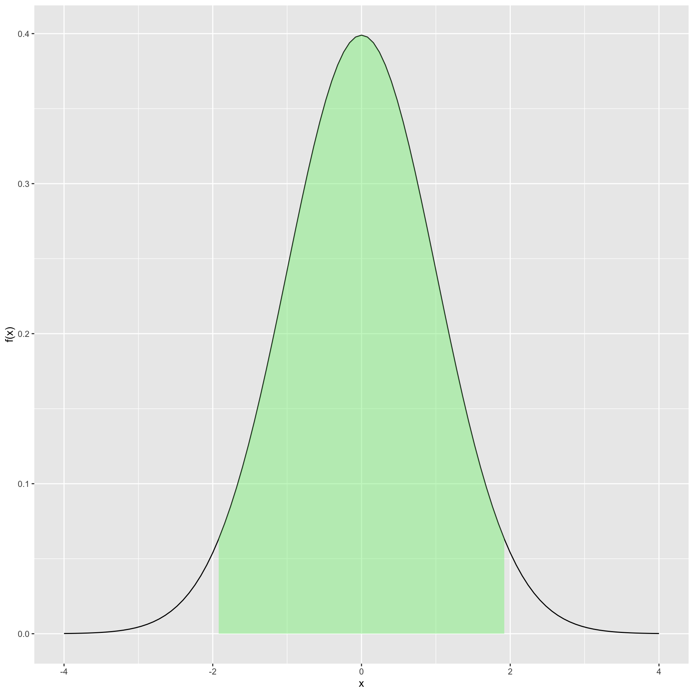
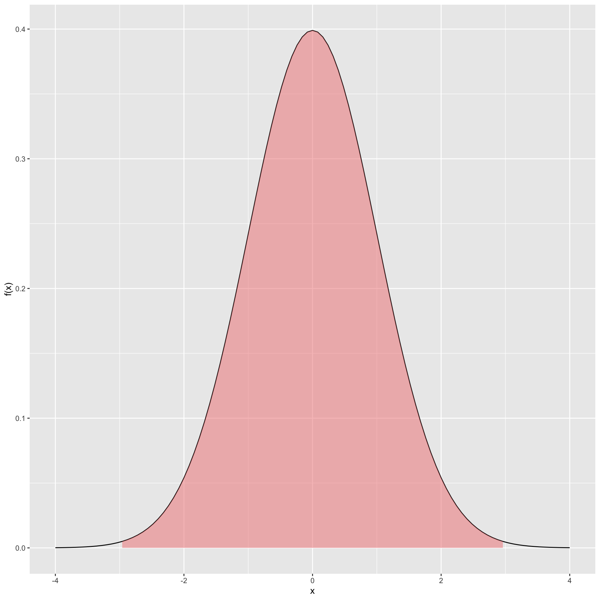

[1] 0.9640697[1] 0.970621Computing probabilities and quantiles from this important distribution
The normal (also known as ‘Gaussian’) is \(X\sim N(\mu,\sigma^2)\):
Its pdf:
\[ f(x)=\frac1{(2\pi\sigma^2)^{1/2}}e^{-\frac{(x-\mu)^2}{2\sigma^2}} \]
(Just like the binomial, you don’t need to know this formula for this class)
Computing probabilities with the normal requires computers
Luckily, we already know the general idea…
We will always write \(X\sim N(\mu,\sigma^2)\) for the normal
R syntax will be specified with \(\mu\) and \(\sigma = \sqrt{\sigma^2}\) instead
Example
If \(X \sim N(5,9)\), then the probability \(X\) is less than 4 is:
[1] 0.3694413Continuing with \(X \sim N(5,9)\), we found that \(P(X < 4)\) is:

Now, let’s ask the opposite question: at what value \(x\) does \(P(X\leq x) = .7\)? .
This is called a quantile of the normal

[1] 3[1] 0.2Suppose \(X \sim N(-3.2, 100)\)
Probability: What is the probability \(X\) is less than 0?
Values: at what value \(x\) does \(P(X\leq x) = .05\)?
Example
Suppose that the scores on the SAT math section are normally distributed with an expected value of 520 and a variance of 3600 (that is, \(X \sim N(520,3600)\))
What is the probability someone scores less than 600?

Example
Suppose that the scores on the SAT math section are normally distributed with an expected value of 520 and a variance of 3600
(that is, \(X \sim N(520,3600)\))
The stats dept. identifies students scoring at or above 96% for recruitment
What is the cutoff score (\(x\)) for recruitment by the stats dept.?
\(P(X \leq x) = 0.96\)
Suppose again \(X \sim N(\mu, \sigma^2)\)
If we multiply/add constants \(a,b\) to \(X\) to form a new rv \(Y\):
\[ Y = aX + b \]
then \(Y \sim(a\mu + b, a^2 \sigma^2)\)
(This should remind you of our \(E[X]\) and \(Var[X]\) results)
Example:
If \(X \sim N(150,100)\) then
\[ Y = 3X + 30 \sim N(480, 900) \]
We are measuring a standard inch using a ruler with a fine scale
If several people measure, they will get some random amount of measurement error:
\[ X \sim N(1, .000001) \]
What is the probability that that a measurement will be within \(\pm\).001 centimeters?
(An inch is 2.54 cm)
\(Y = 2.54X\), therefore \(Y \sim\) . . . \(N(2.54, 2.54^2*.000001)\)
When \(\mu=0\) and \(\sigma=1\), we call it the standard normal
\[ f(x)=\frac1{\sqrt{2\pi}}e^{-x^2/2},\,\,-\infty<x<\infty. \]
(Once again, you don’t need to know this formula for this class)
The standard normal will be notated as: \(Z \sim N(0,1)\)
Going from a general normal to a standard normal is known as standardization
\[ X \sim N(\mu, \sigma^2) \longrightarrow Z = \frac{X - \mu}{\sigma} \sim N(0,1) \]
The opposite (actually, the inverse) is true
\[ Z \sim N(0, 1) \longrightarrow X = Z \sigma + \mu \sim N(\mu,\sigma^2) \]
(this is using the results in Transforming Normals)
If we are given a value \(x\) from a distribution with mean \(\mu\) and variance \(\sigma^2\), we can compute its z-score via
\[ \text{z-score} = \frac{x - \mu}{\sigma} \]
Question: Which of the two values from two different distributions is more unusual?
Answer: Whichever has larger magnitude z-score
(that is, largest |z-score|)
Example: We want to compare olympic records in men’s and women’s sprinting. Which is more unusual?
Let’s look at a table:
| Category | Mens | Womens |
|---|---|---|
| average | 9.84 | 10.81 |
| variance | .0057 | .0049 |
| record | 9.63 | 10.61 |
Another usage of z-scores: what value \(x\) would be equally as unusual?
Answer: Choose the \(x\) so that the z-scores are equal
Example: What time would a men’s sprinter need to get to be as unusal as the female record?
| Category | Mens | Womens |
|---|---|---|
| average | 9.84 | 10.81 |
| variance | .0057 | .0049 |
| record | 9.63 | 10.61 |
We found the female z-score = -3.143
\[ \text{z-score}*\sigma + \mu = x \]
Here, use
The male record would need to be 9.603 seconds to be as as unusual as the female record.
Values from normal distributions contain predictable amounts of probability
This is the empirical rule:]



Returning to SAT example:
[1] 0.9087888[1] 625.0412To use the applet
The normal plays a central role in probability and statistics
We will return to it later during sampling distributions…